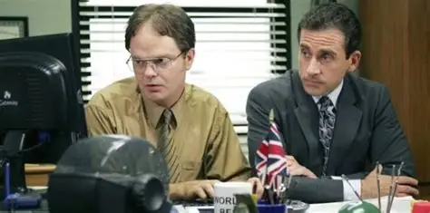

The Office se consolidou como uma das séries de comédia mais influentes da televisão moderna. Exibida entre 2005 e 2013, a produção americana conquistou audiência crescente ao longo dos anos e ganhou ainda mais força com o streaming. O estilo de falso documentário, os silêncios constrangedores e personagens carismáticos transformaram a rotina da fictícia Dunder Mifflin em referência cultural.